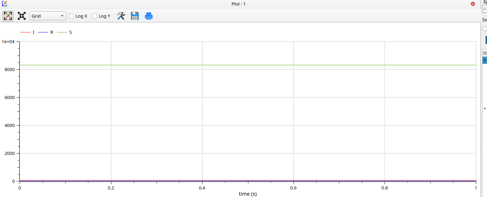
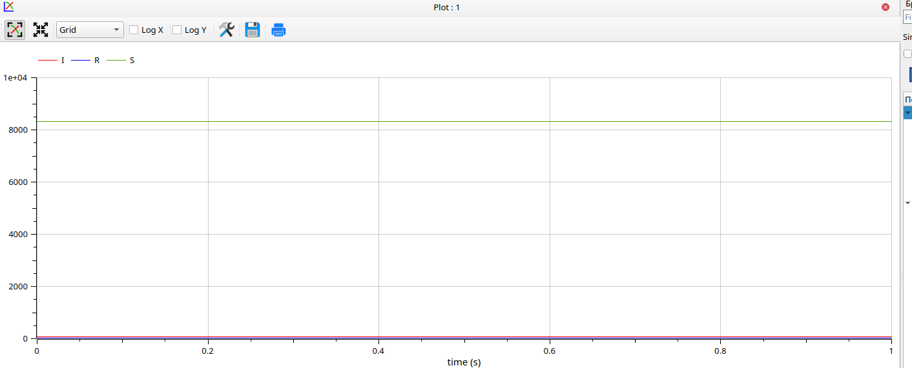
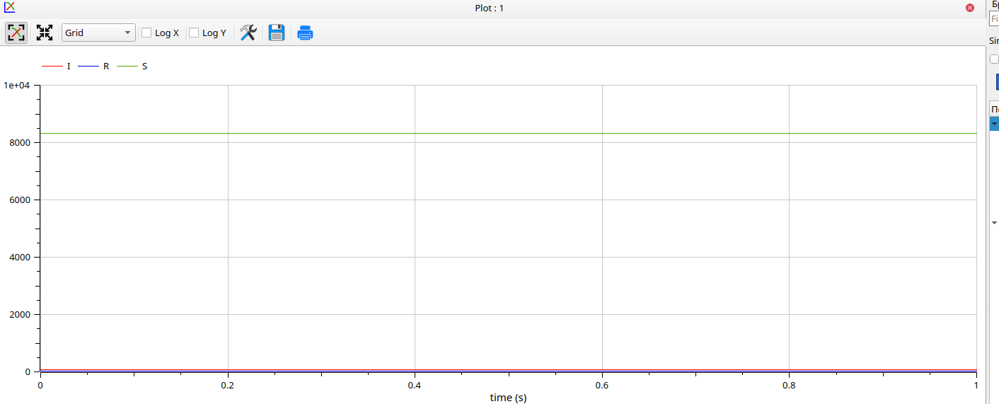

Cлучай, когда I(0) ≤ I*  

Cлучай, когда I(0) > I*


:::::::::::::: {.columns align=center} ::: {.column width=“70%”}
В 1927 году, WO Kermack и AG Маккендрик создали модель , в которой они считали фиксированное население только с тремя отделениями: восприимчивыми, ; инфицированных, ; и извлекают, . В данной модели используются отсеки трех классов: - S(t) используется для представления людей, еще не инфицированных заболеванием в момент времени t, или людей, восприимчивых к заболеванию в популяции. - I(t) обозначает людей из населения, которые были инфицированы этим заболеванием и способны распространить болезнь среди лиц, относящихся к уязвимой категории. - R(t) это отделение, используемое для людей из популяции, которые были инфицированы, а затем удалены от болезни, либо из-за иммунизации, либо из-за смерти. Люди из этой категории не могут снова заразиться или передать инфекцию другим. Математическое моделирование инфекционного заболевания .
Научиться работать с OpenModelica и Julia
Построить графики изменения числа особей в группах с помощью простейшей модели эпидемии
Рассмотреть, как будет протекать эпидемия в различных случаях
Получение новых знаний в ходе выполнения лабораторной работы
На одном острове вспыхнула эпидемия. Известно, что из всех
проживающих на острове (N=8 439) в момент начала эпидемии (t=0) число
заболевших людей (являющихся распространителями инфекции) I(0)=86, А
число здоровых людей с иммунитетом к болезни R(0)=25. Таким образом,
число людей восприимчивых к болезни, но пока здоровых, в начальный
момент времени S(0)=N-I(0)- R(0). Постройте графики изменения числа
особей в каждой из трех групп. Рассмотрите, как будет протекать эпидемия
в случае:
1) если I(0) ≤ I* 2)
если I(0) > I*
Познакомиться с простейшей моделью эпидемии
Научиться строить графики изменения числа особей в группах с помощью OpenModelica
Описание код и построение графику
Применение полученных знаний на практике в дальнейшем
Cлучай, когда I(0) ≤ I*

Cлучай, когда I(0) > I*
Мы научились работать в OpenModelica и Julia
Научились строить графики изменения числа особей в группах с помощью простейшей модели эпидемии
Рассмотрели, как будет протекать эпидемия в различных случаях